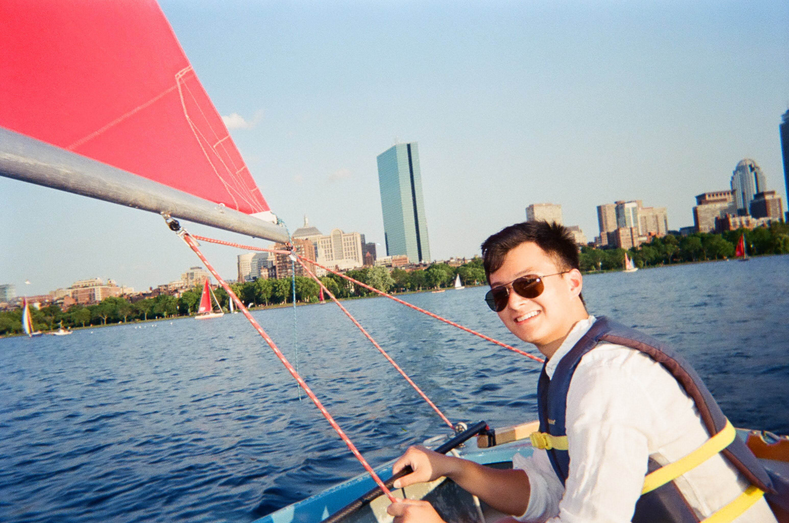

I am an incoming PhD student at Princeton University. I am a Schwarzman Scholar. I was previously an Immunology Researcher at Memorial Sloan Kettering Cancer Center.
I engineer cells to understand how they present, evade, and respond to the immune system, and I design synthetic systems that give precise control over where and when a gene is expressed. A recurring theme is using a cell's own transcriptional state as a signal, reading what a cell is so the right instruction reaches exactly the right place.
Before this I studied Human Developmental and Regenerative Biology at Harvard. I worked in George Church's lab at the Wyss Institute with Merrick Pierson Smela on in vitro oogenesis, using transcription factor directed differentiation to build human germ cells and ovarian tissue from stem cells.
Every cell type carries a distinctive RNA fingerprint. In my senior thesis I used these signatures as an address system, reading a cell's own transcripts to direct a gene therapy to exactly the cells that should receive it. This work won first place in Harvard's 3 Minute Thesis competition. You can watch the three minute version here.
